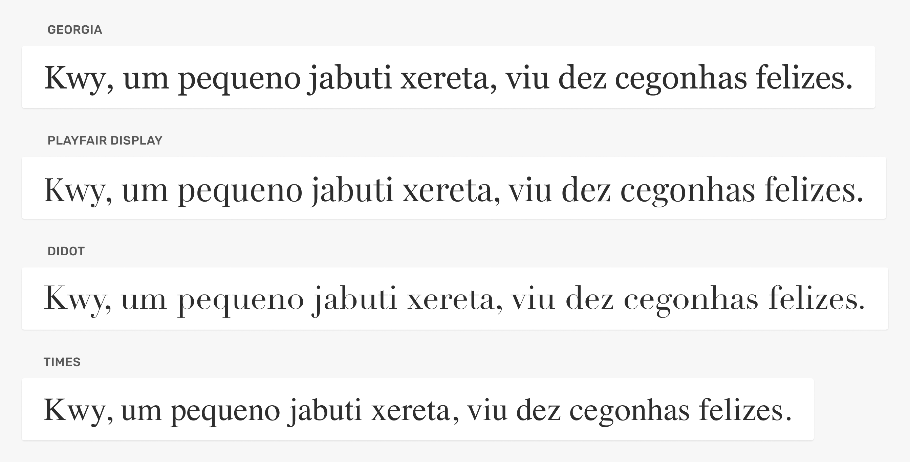
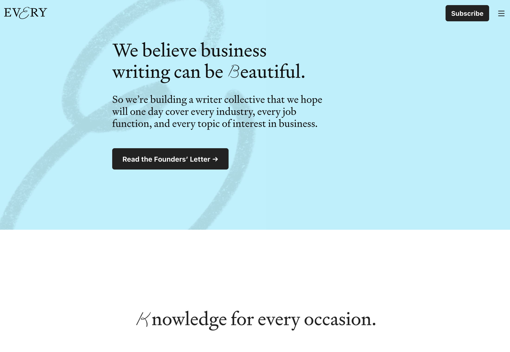
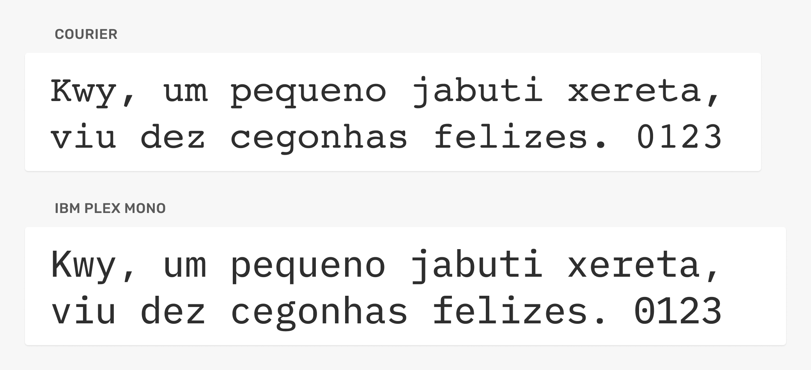
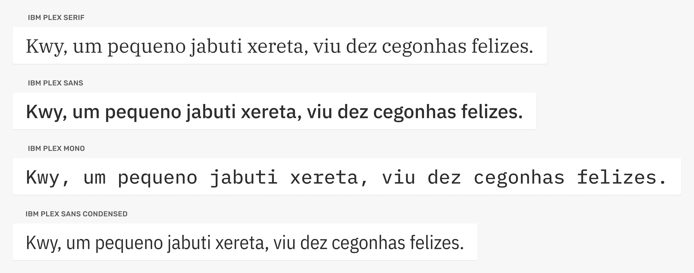
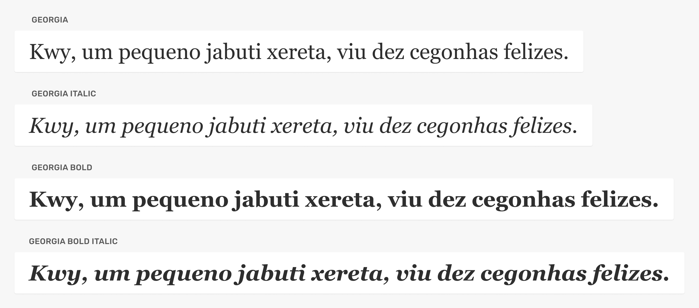
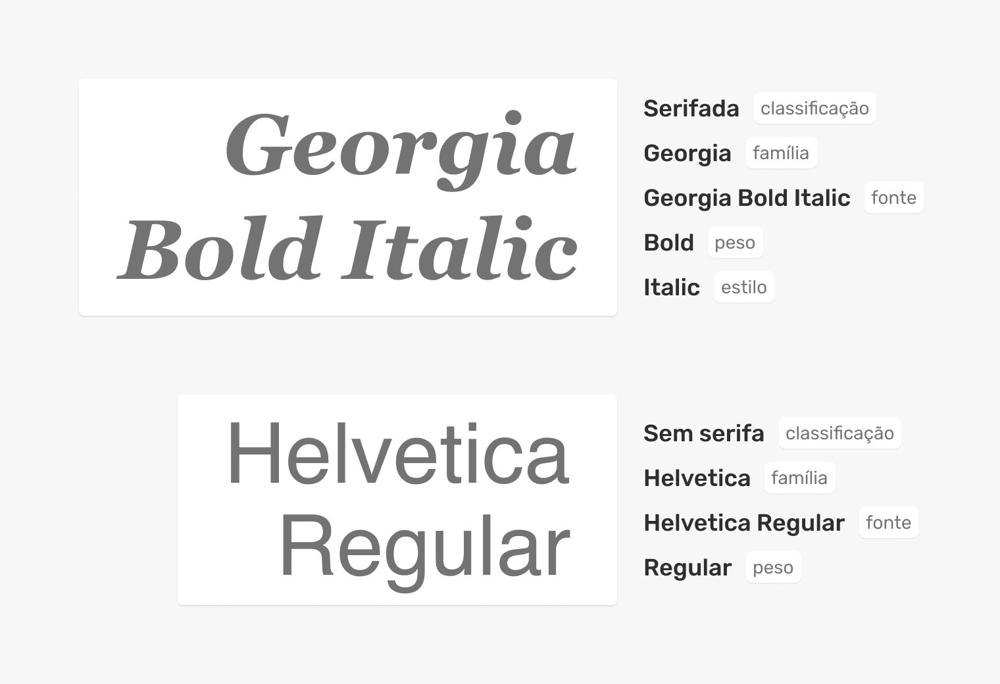
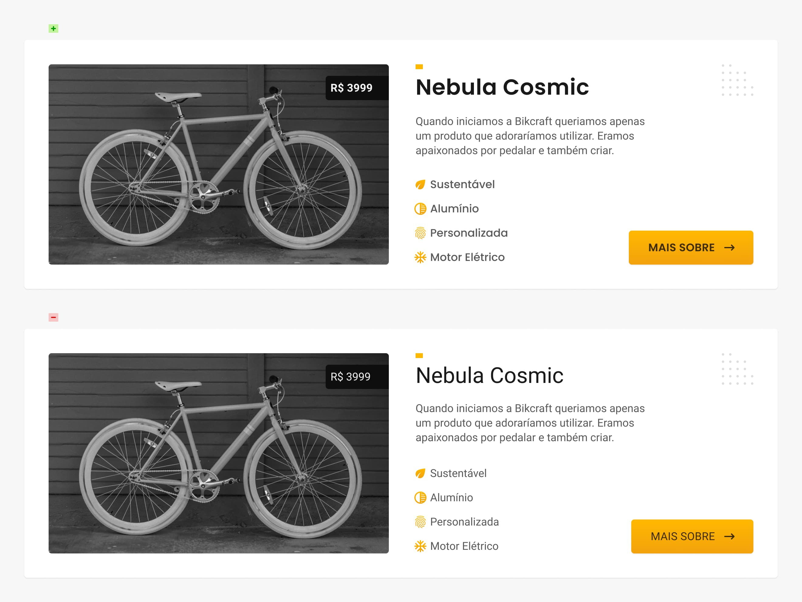

UI Design
Tipografia
Tipografia
"Web Design é 95% tipografia"
iA - 2006
Classificações
Classificações
Serifadas, sem serifas, monoespaçadas, cursivas e decorativas.
Famílias
Arial, Helvetica, Georgia, Futura, Roboto e outras.
Fontes
Georgia Regular, Georgia Bold, Georgia Italic e outras.
Serifadas
As serifadas (serif) são caracterizadas pelos pequenos detalhes nas extremidades dos caracteres.
Estilo
Formal, clássico, luxo, literário e manual.
Uso
Corpo de texto e títulos.

Every utiliza serifadas nos títulos e corpo de texto, uma boa escolha para um site focado em escritores/leitores.

Sem Serifas
As sem serifas (sans serif) são caracterizadas pelas suas formas neutras e pela ausência das serifas.
Estilo
Neutro, digital, objetivo e informal.
Uso
Corpo de texto, títulos e texto funcional (botões, links, abas).
A marca Moy comunica objetividade através do uso de tipografias neutras e sem serifas em toda a interface.
Monoespaçadas
As monoespaçadas (monospace) possuem todos os seus caracteres com a mesma largura, permitindo que linhas de texto se alinhem perfeitamente uma abaixo da outra.
Estilo
Digital, objetivo e técnico.
Uso
Dados, tabelas e código.

Tipografia monoespaçada é utilizada na interface do Github para mostrar o código dos arquivos. Os outros elementos da interface utilizam uma tipografia sem serifa.
Cursiva
As tipografias cursivas (script/handwriting) tentam imitar a escrita ocidental com formas orgânicas e geralmente ligadas entre si.
Estilo
Manual e celebrações.
Uso
Títulos e pequenos textos.
O site Bide utiliza tipografia cursiva para nomes no texto principal.
Decorativas
Tipografias decorativas (display) são todas aquelas que possuem características fortes que as tornam distintas de qualquer outra tipografia. Elas podem dar vida ou arruinar um projeto.
Estilo
Site temático.
Uso
Títulos e pequenos textos.
O site Drink Monday utiliza uma tipografia que lembra o estilo art nouveau em contraste com o estilo art déco da marca Monday.

Famílias
O desenho de uma tipografia feito por um designer de tipos define uma família tipográfica. As famílias tipográficas são as mais variadas possíveis e geralmente possuem influências históricas.
Quando um designer cria uma família tipográfica que possui diferentes classificações, temos uma super família.

Fontes
A família tipográfica é composta por diferentes fontes que podem variar desde o peso (regular/bold) ao estilo (oblique/italic). A fonte é o arquivo final.

Além de estilos pré-definidos pelo designer de tipos, hoje em dia existem também fontes variáveis que te permitem criar fontes com um ajuste mais fino: https://web.dev/variable-fonts/
Toda fonte possui a sua classificação, família e peso.

Contraste
Fontes
O uso de diferentes fontes facilita a criação de contraste entre os elementos.
Famílias
Evite utilizar famílias parecidas e se limite ao uso de duas diferentes (iniciantes).

Apesar da Roboto (corpo de texto) e Poppins (título, lista e botão) serem ambas sem serifas, a Poppins é uma geométrica e possui características diferentes o suficientes para criar contraste entre as mesmas.